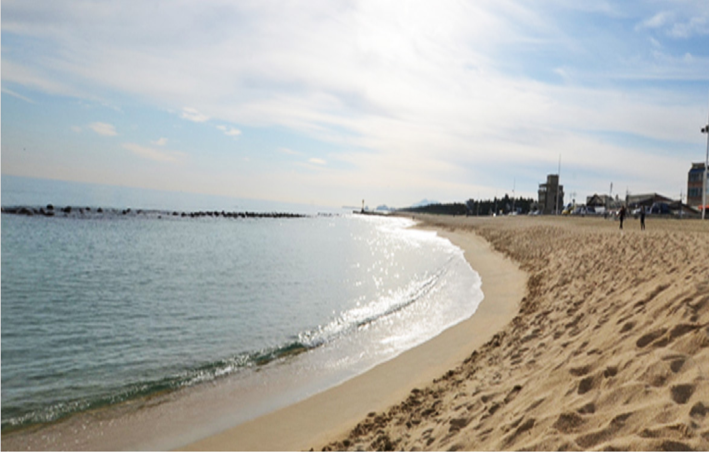
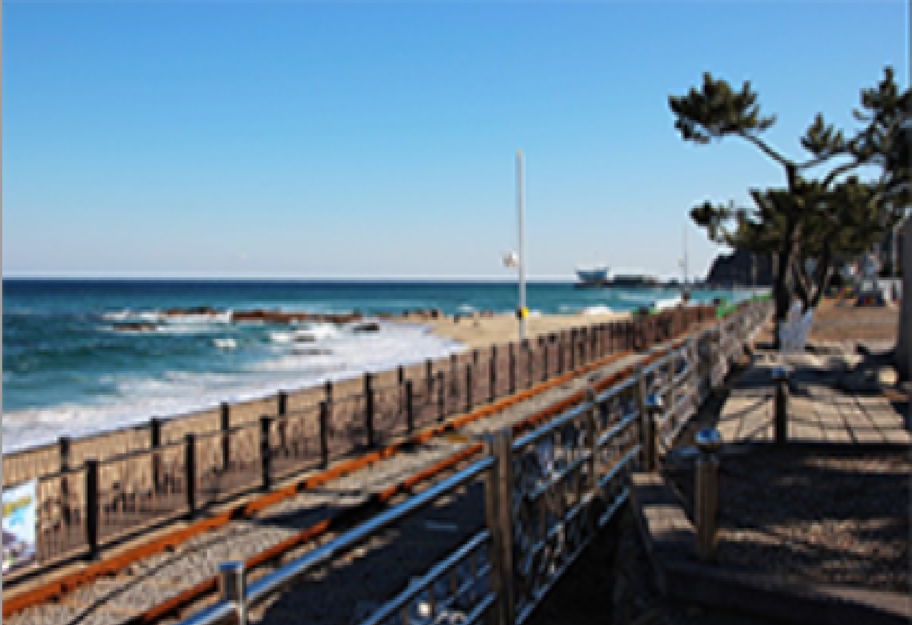
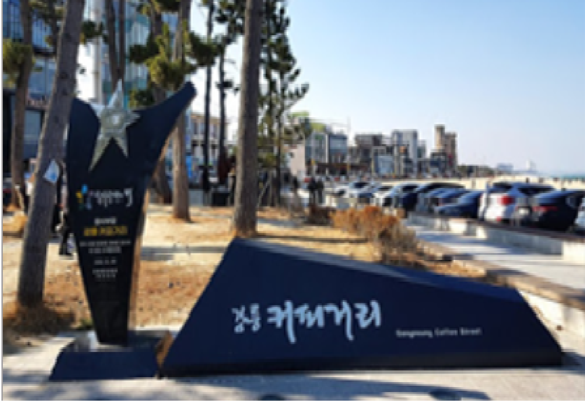

강문해변
- 강릉 강문해변
- 예부터 경포대 진입로 3㎞ 구간은 벚꽃이 만발하여 관광자원으로 손색이 없었다.
이를 시민들에게 개방함으로써 유락과 휴식 외에 관광객 유치에도 유인요소가 되었다.
더구나 관동팔경 중의 하나로 손꼽히는 경포대이기 때문에 그 정취가 빛난다는 점에서
1993년 4월부터 경포대 벚꽃 축제가 열리기 시작하였다.2003년의 경우 전체 행사기간은
4월 8일부터 4월 14일까지 7일 간이었으며, 문화예술이벤트 행사는 벚꽃이 만발한 4월 9일과 10일,
이틀 간 개최되었다.

강문해변
- 정동진 레일바이크
- 연인, 친구, 가족과 함께 전동바이크를 타고 떠나는 피톤치드 가득한 드라이브!
해안선을 따라 달리는 바다 풍경을 감상할 수 있다.
강원도 여행의 백미로 손꼽히며 많은 관광객이 찾고 있는 레저스포츠이다.
정동진레일바이크는 정동진역을 출발해 전 구간 시원한 바닷바람을 느끼며 바다 경치를 즐길 수 있도록
운행되며 커플 또는 가족 관광객들에게 특별한 추억을 만들어준다.

강문해변
- 강릉 커피거리
- 강릉커피거리는 커피자판기로 유명한 거리였다가 2000년 이후 바리스타들이 정착하면서 강릉 커피의 메카로 자리잡았다.
대부분 카페가 통유리로 되어있어 안목항을 바라보며 커피를 즐길 수 있다.
특히나 에메랄드 빛 바다를 배경삼아 즐기는 따뜻한 커피 한잔과 글 한줄의 의미는
세상 어떤 초콜릿 보다 감미로우며, 그 진한 향기속에 소중한 사람과 나누는 이야기는 세상 어떤 꿀보다 달콤하다.
